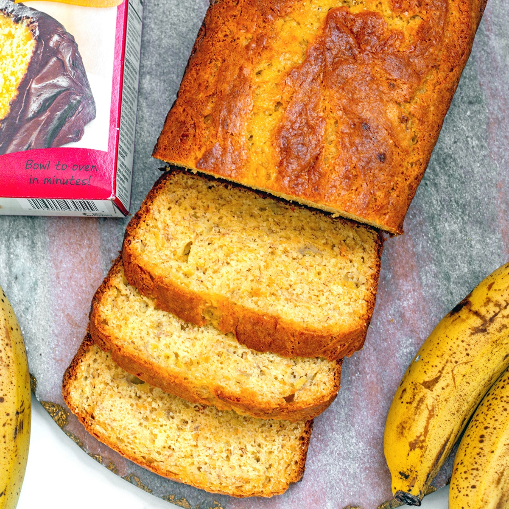

Banana Bread

Description
Put those ripe bananas to use in this moist, delicious banana bread and you'll learn why it's the most popular recipe on Simply Recipes.
Ingredients
- 2 to 3 medium (7" to 7-7/8" long) very ripe bananas, peeled (about 1 1/4 to 1 1/2 cups mashed)
- 1/3 cup (76g) butter, unsalted or salted, melted
- 1/2 teaspoon baking soda (not baking powder)
- 1 pinch salt
- 3/4 cup (150g) sugar (1/2 cup if you would like it less sweet, 1 cup if more sweet)
- 1 large egg, beaten
- 1 teaspoon vanilla extract
- 1 1/2 cups (205g) all-purpose flour
Steps
- Preheat the oven to 350°F (175°C): Butter an 8x4-inch loaf pan.
- Mash the bananas and add the butter: In a mixing bowl, mash the ripe bananas with a fork until completely smooth. Stir the melted butter into the mashed bananas.
- Mix in the remaining ingredients: Mix in the baking soda and salt. Stir in the sugar, beaten egg, and vanilla extract. Mix in the flour.
- Bake the bread: Pour the batter into your prepared loaf pan. Bake for 55 to 65 minutes at 350°F (175°C), or until a toothpick or wooden skewer inserted into the center comes out clean. A few dry crumbs are okay; streaks of wet batter are not. If the outside of the loaf is browned but the center is still wet, loosely tent the loaf with foil and continue baking until the loaf is fully baked.
- Cool and serve: Remove from oven and let cool in the pan for a few minutes. Then remove the banana bread from the pan and let cool completely before serving. Slice and serve. (A bread knife helps to make slices that aren't crumbly.)Wrapped well, the banana bread will keep at room temperature for 4 days. For longer storage, refrigerate the loaf up to 5 days, or freeze it.
Return Home!!!